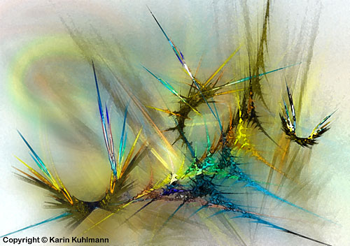
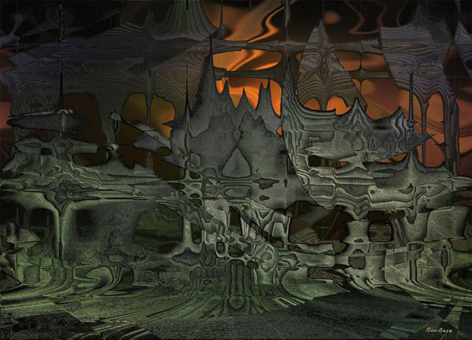
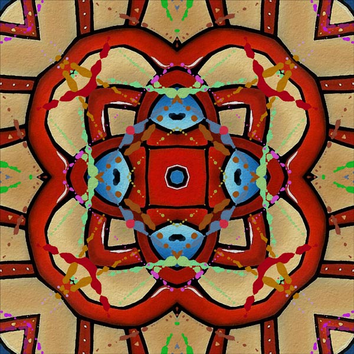
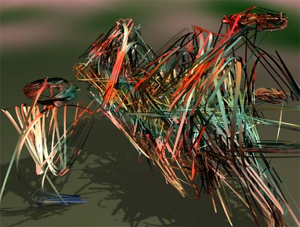
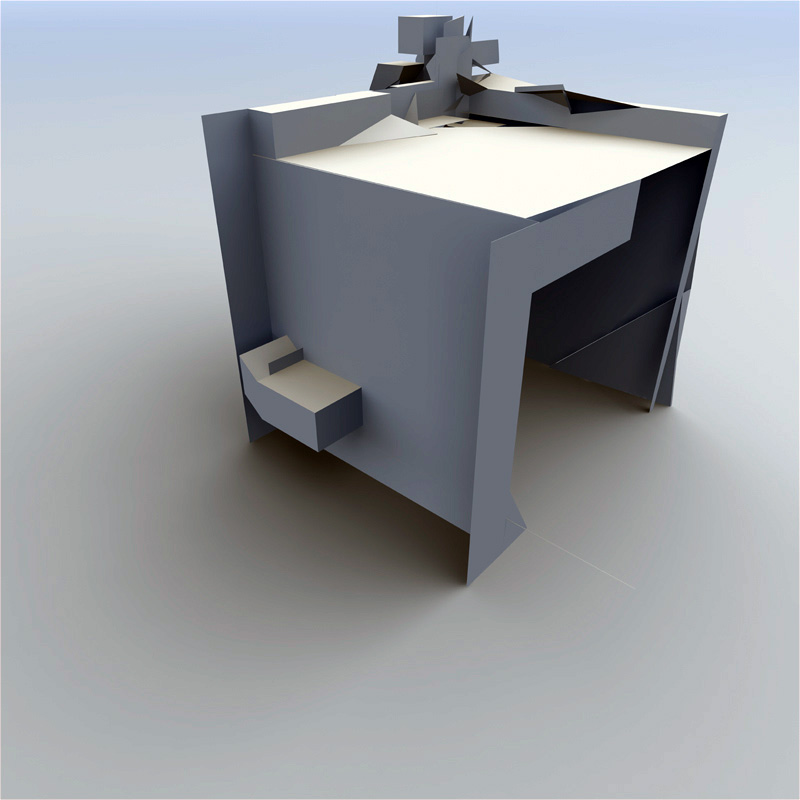

IMAGES OF THE DAY 84
10/11/2023 - 10/20/2023

10/11/2023
Algorithmic/Fractal
AbstraXness
Meta
by Karin Kuhlmann
Click image to access artist's full exhibit
10/12/2023 
Algorithmic/Fractal
Dynamic Painting/Generative Art
https://moca.virtual.museum/autogallery/autogallery_dragulescu/spam_architecture.03.jpg
Pompei
by San Base
Click image to access artist's full exhibit

10/13/2023
Algorithmic/Fractal
Infinity
Abstract-01
by Ante Barisic
Click image to access artist's full exhibit
Algorithmic/Fractal
Organica
10/14/2023
Spooky Moon
by Pam Blackstone
Click image to access artist's full exhibit

Algorithmic/Fractal
Karim Digital Kunst
10/15/2023
Magic Butterflies
by Karim Bouchnak
Click image to access artist's full exhibit

Algorithmic/Fractal
10/16/2023
Guest Gallery
Planet Cubicle
by Richard Canington
Click image to access artist's full exhibit

Algorithmic/Fractal
Abstract
10/17/2023
Evolution 1
by Vlatko Ceric
Click image to access artist's full exhibit


Algorithmic/Fractal
Self-Programmed
10/18/2023
Doodle
by Charles Csuri
Click image to access artist's full exhibit

10/19/2023
Algorithmic/Fractal
Spam Architecture
Spam Architecture 03
by Alex Dragulescu
Click image to access artist's full exhibit
10/20/2023
Algorithmic/Fractal
Codagraphs
We Are Mostly Water
by Simon David Eden
Click image to access artist's full exhibit
BACK TO IMAGES OF THE DAY 83
NEXT